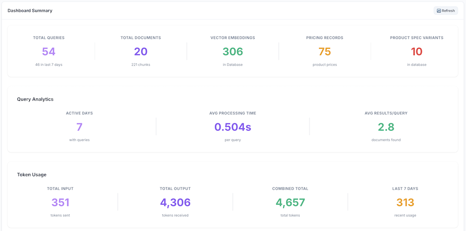
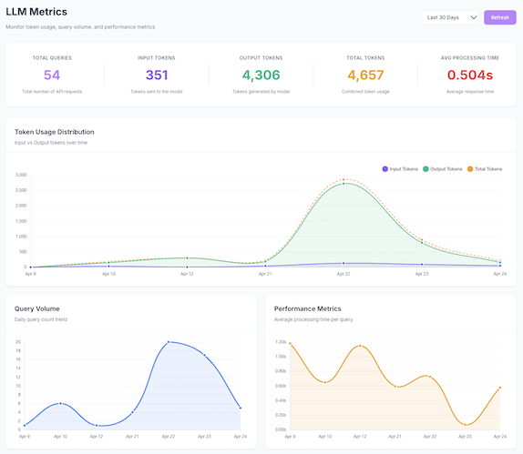
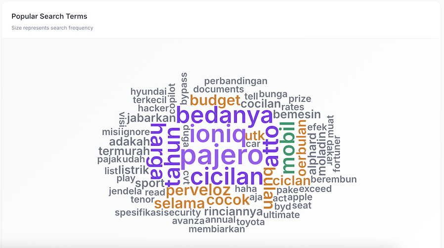
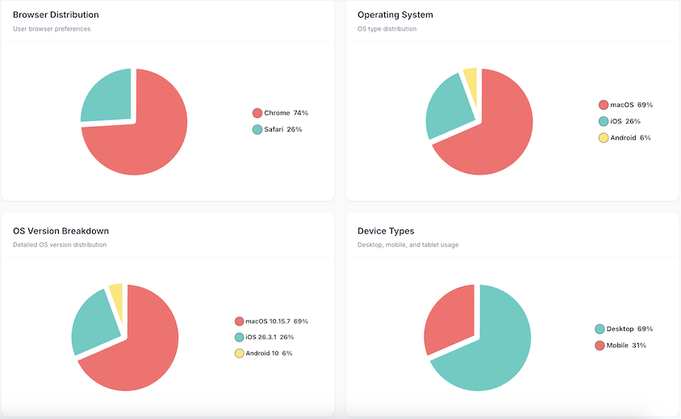
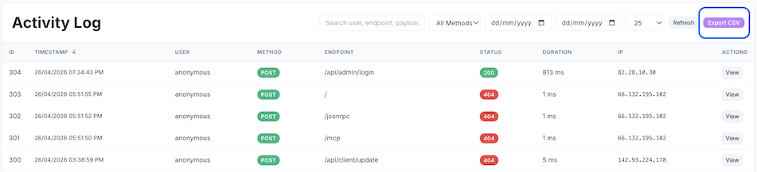

Analytics & Reports
Monitor query metrics, token usage, search patterns, user demographics, and query history across five analytics pages.
analyst manager superadmin
Summary Dashboard
The Summary page provides a high-level overview of system-wide metrics in stat cards and tables.
Key Metrics
| Metric | Description |
|---|---|
| Total Queries | All-time number of search queries processed |
| Last 7 Days | Queries in the past week |
| Active Days | Number of days with at least one query |
| Avg Processing Time | Mean time to process a query (in seconds) |
| Avg Results/Query | Average number of search results per query |
Token Usage
| Metric | Description |
|---|---|
| Total Input Tokens | All-time tokens sent to the LLM (context + query) |
| Total Output Tokens | All-time tokens generated by the LLM |
| Combined Total | Input + Output tokens |
| Last 7 Days | Token usage in the past week |
Document Breakdown
- Files uploaded — count of PDF/TXT documents
- URLs scraped — count of ingested web pages
- Total chunks — number of text chunks across all documents
Model Usage Table
Shows each LLM model used with: query count, average processing time, and usage percentage.
Data Volume
Shows the total database size on disk in MB, pricing record count, and product spec variant count.

Monthly Query Quota Meter
When a monthly query quota is configured (via MAX_QUERIES_PER_MONTH), a progress bar appears on the Welcome page directly below the greeting. It shows:
- Queries used this calendar month vs. the plan limit
- A color-coded bar: green (<70%), yellow (70–90%), red (>90%)
- The bar resets automatically on the first day of each new month
| Plan | Behavior When Exceeded |
|---|---|
| Starter | Hard block — HTTP 429 Too Many Requests |
| Professional | Soft warning — X-Quota-Warning response header |
| Enterprise | No limit (meter hidden when MAX_QUERIES_PER_MONTH=0) |
LLM Usage Metrics
Detailed LLM performance tracking with interactive charts. Select a time period (7, 14, 30, 60, or 90 days) to analyze trends.
Summary Cards
- Total queries in period
- Input tokens consumed
- Output tokens generated
- Total tokens
- Average processing time
Each LLM call records input tokens (the context + question sent to the model) and output tokens (the generated answer). These are accumulated and displayed in the summary cards and daily trend chart. You can use this data to monitor LLM costs and optimize Max Input Tokens and Max Output Tokens in Settings.
Charts
| Chart | Type | Shows |
|---|---|---|
| Token Usage Distribution | Line chart | Daily input, output, and total tokens over the period |
| Query Volume | Bar chart | Daily query count over the period |
| Performance Metrics | Line chart | Average processing time per day |

Charts are rendered using Chart.js 4.4.0 with responsive, interactive tooltips.
Search Insights
Analyze what users are searching for with word frequency analysis and a visual word cloud.
Metrics
- Total Searches — query count in period
- Unique Terms — distinct words used across queries
- Avg Words/Query — average query length
- Unique Queries — distinct query strings
Word Cloud
An interactive visualization where word size reflects search frequency. Color-coded by frequency tier. Click any word to see its exact count.

Common words in both Indonesian (yang, di, dan, ini, itu, ...) and English (the, is, at, which, on, ...) are automatically filtered out to show only meaningful search terms.
Top Queries Table
A ranked table showing: position, query text, count, and percentage of total queries.
User Analytics
Understand who your users are — their browsers, operating systems, devices, and geographic locations.
Summary
- Total queries
- Unique browsers
- OS types
- Device types
Charts
| Chart | Type | Shows |
|---|---|---|
| Browser Distribution | Pie chart | Chrome, Firefox, Safari, Edge, Opera, etc. |
| OS Distribution | Pie chart | Windows, macOS, Linux, iOS, Android, etc. |
| OS Version Breakdown | Detailed chart | Specific OS versions (e.g., Windows 11, macOS 14) |
| Device Types | Pie chart | Desktop, Mobile, Tablet distribution |
| Geographic Distribution | World map | User locations via GeoIP |

Query History
A detailed log of every query processed by the system, with full metadata.
History Table
| Column | Description |
|---|---|
| ID | Unique query identifier |
| Timestamp | When the query was submitted (sortable) |
| Question | The user's query text |
| Temperature | LLM temperature used |
| Results | Number of search results found |
| Processing Time | Total processing time in seconds (sortable) |
| Tokens | Input + output token count |
Detail Modal
Click any row to open a detail modal showing the full query record:
- Full question & answer text
- Model used (e.g., amazon.nova-lite-v1:0)
- Search type (hybrid / vector / bm25)
- Citations — source references in the answer
- Client info — IP address, user agent, device type, OS, browser
- Location — GeoIP-resolved location
- Page URL — the page the query was submitted from
Export
Click "Export CSV" to download the full query history as a CSV file for external analysis.
